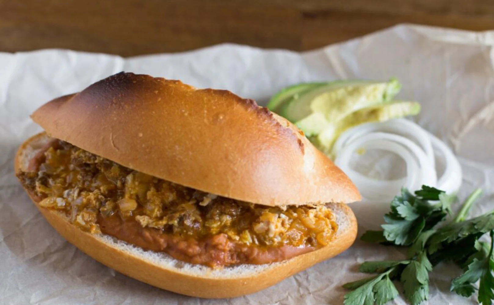

>
Everybody loves sandwiches. Tortas are basically the same thing, just served with some Mexican foods and toppings. They're very delicious and not hard to make! I'll be going over how to make a torta with some chorizo. From start to end, it shouldn't take more than a half hour and you don't need much to make them. Let's go over the ingredients you'll need to make these for yourself! This recipe will make enough for two tortas. You can adjust the measurements for however many you'd like to make.